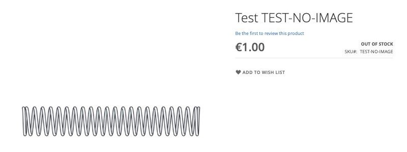

Huit de vos ressorts, dessinés à leurs propres cotes.
Chaque dessin vient des seuls attributs de la fiche produit, lus sur vanel.tech le 30 septembre 2026. À gauche de chaque dessin, l'image que la fiche affiche ce jour-là.
Planche
| Ressorts de compression, planche 1 | |
|---|---|
| Source | attributs des fiches vanel.tech, lus le 30/09/2026 |
| Méthode | gabarit paramétrique, aucune retouche |
| À gauche | image affichée par la fiche le 30/09/2026 |
| Couleurs | cote lue dans la fiche |
Essayez une autre référence
Collez une référence ou l'adresse de sa fiche : le ressort se dessine. Corrigez une cote, le dessin suit.
D'où vient chaque trait
Ce que la chaîne fait déjà, et ce qui reste à brancher
